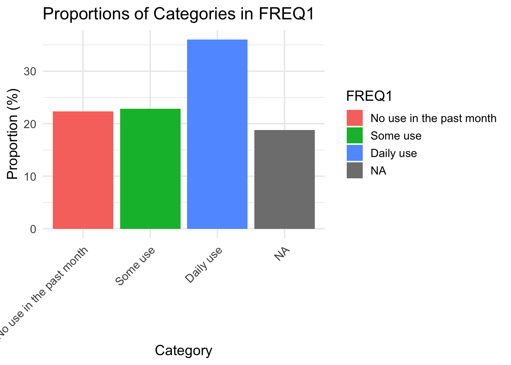
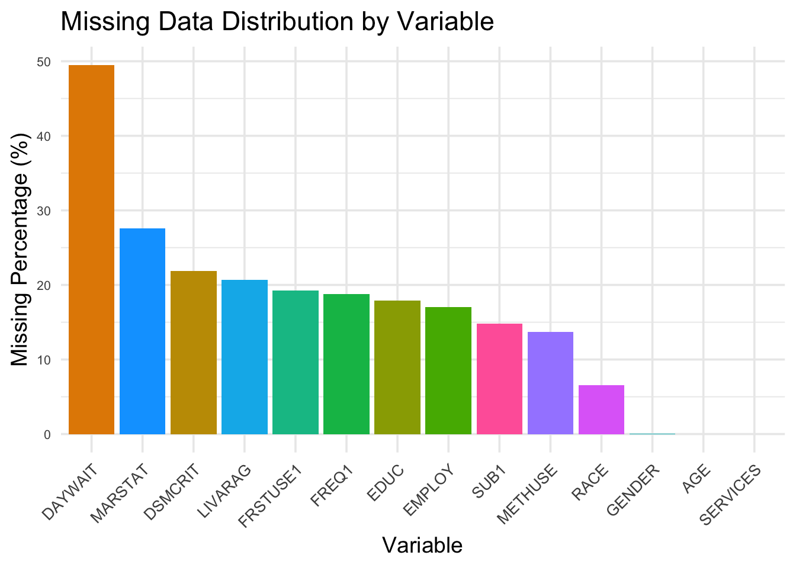

Code
load("data/rawdata.rdata")The data we use in this project is TEDS-A dataset, and the time period we use is year 2021. The link for this dataset is https://www.samhsa.gov/data/data-we-collect/teds/datafiles.
For this project, we propose using the Treatment Episode Data Set - Admissions (TEDS-A), 2021, which is managed by the Substance Abuse and Mental Health Services Administration (SAMHSA). This dataset exclusively contains records of substance use treatment admissions that occurred in the year 2021 across the United States. The data is collected by state agencies from state-licensed or certified treatment centers that receive public funding. It encompasses both administrative details and self-reported information from individuals at the time of admission, making it a valuable resource for studying substance use treatment trends.
The dataset is provided in multiple formats, including SAS, SPSS, Stata, R, and ASCII comma-delimited files, ensuring compatibility with diverse analytical tools. The availability of the dataset in R format facilitates efficient analysis within RStudio, which will be used for this project. The 2021 dataset contains 1,482,543 records, each corresponding to a unique treatment admission. The key variables include demographic information such as age, gender, and race; substance use details like primary, secondary, and tertiary substances; and service-related attributes such as referral source and type of treatment received.
For processing and analysis, we will exclusively use R. We plan to utilize the tidyverse suite of packages for data cleaning, manipulation, and visualization. The haven package will be used to import the dataset, allowing seamless handling of SPSS or Stata formats. Additionally, dplyr will be employed for filtering, grouping, and summarizing the data, while ggplot2 will be used to visualize trends and relationships. Comprehensive documentation provided by SAMHSA, including user manuals and crosswalks, will ensure that variables are accurately interpreted and used appropriately in the analysis. The dataset and its documentation are publicly available through SAMHSA’s official data portal.
load("data/rawdata.rdata")library(haven)
tedsa_puf_2021_r <- as.data.frame(lapply(tedsa_puf_2021_r, function(col) {
if (inherits(col, "haven_labelled")) {
haven::as_factor(col)
} else {
col
}
}))
tedsa_puf_2021_r[tedsa_puf_2021_r == -9] <- NAWhile the TEDS-A dataset provides extensive coverage of treatment admissions in 2021, it has several limitations due to missing or incomplete data. Some variables contain a significant proportion of missing values, invalid, or uncollected data. For example, employment status has 17.0% missing data, likely reflecting cases where the information was unavailable or not collected. Similarly, frequency of substance use for primary substances has 18.8% missing values. These missing data points can pose challenges for analysis by reducing the reliability of certain conclusions.
library(ggplot2)
library(dplyr)
Attaching package: 'dplyr'The following objects are masked from 'package:stats':
filter, lagThe following objects are masked from 'package:base':
intersect, setdiff, setequal, unioncalculate_proportions <- function(data, column) {
data |>
group_by(across(all_of(column))) |>
summarise(count = n(), .groups = "drop") |>
mutate(proportion = count / sum(count) * 100,
variable = column)
}
variables <- c("EMPLOY", "FREQ1")
for (var in variables) {
plot_data <- calculate_proportions(tedsa_puf_2021_r, var)
plot <- ggplot(plot_data, aes_string(x = var, y = "proportion", fill = var)) +
geom_bar(stat = "identity", position = "dodge") +
labs(title = paste("Proportions of Categories in", var),
x = "Category",
y = "Proportion (%)") +
theme_minimal(base_size = 14) +
theme(axis.text.x = element_text(angle = 45, hjust = 1))
print(plot)
}Warning: `aes_string()` was deprecated in ggplot2 3.0.0.
ℹ Please use tidy evaluation idioms with `aes()`.
ℹ See also `vignette("ggplot2-in-packages")` for more information.
library(redav)
library(ggplot2)
cols_to_keep <- c("AGE", "GENDER", "RACE", "MARSTAT", "EDUC", "EMPLOY", "LIVARAG", "SERVICES",
"METHUSE", "DAYWAIT", "SUB1", "FREQ1", "FRSTUSE1", "DSMCRIT")
tedsa_puf_2021_r_new <- tedsa_puf_2021_r[ , cols_to_keep]
plot_missing(tedsa_puf_2021_r_new, max_rows=5, max_cols=7)Scale for y is already present.
Adding another scale for y, which will replace the existing scale.
Scale for y is already present.
Adding another scale for y, which will replace the existing scale.library(naniar)
library(ggplot2)
missing_summary <- colSums(is.na(tedsa_puf_2021_r_new)) / nrow(tedsa_puf_2021_r_new) * 100
missing_data <- data.frame(
Variable = names(missing_summary),
MissingPercentage = missing_summary
)
ggplot(missing_data, aes(x = reorder(Variable, -MissingPercentage), y = MissingPercentage, fill = Variable)) +
geom_bar(stat = "identity", show.legend = FALSE) +
labs(
title = "Missing Data Distribution by Variable",
x = "Variable",
y = "Missing Percentage (%)"
) +
theme_minimal(base_size = 14) +
theme(
axis.text.x = element_text(size = 10, angle = 45, hjust = 1),
axis.text.y = element_text(size = 8)
)
To address missing data, we will use a systematic approach within R. For categorical variables like pregnancy status and employment status, we will create a separate category for missing values. This ensures that missing data is accounted for without distorting distributions through imputation. For numerical variables, such as age at first use or days waiting for treatment, we will analyze patterns of missingness and decide on appropriate imputation methods. For instance, if the missing values are randomly distributed, we may use the median or mode for imputation. However, for variables where more than 50% of values are missing, such as detailed criminal justice referral, these variables may be excluded from certain analyses to prevent introducing bias.
Handling missing data will rely on R packages like tidyr and mice for managing and imputing missing values. Visual tools from ggplot2 will help identify patterns in missingness and validate the chosen methods. This comprehensive approach ensures that missing data is appropriately managed without compromising the quality or integrity of the analysis. By leveraging the flexibility and analytical power of R, we aim to effectively mitigate the impact of missing data while maintaining the dataset’s analytical utility.